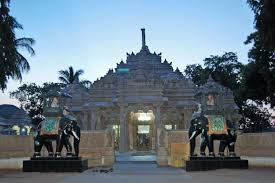
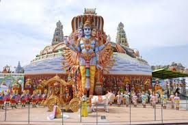

The Yadadri Temple is a major pilgrimage site dedicated to Lord Lakshmi Narasimha Swamy. Located on a hill, it is known for its magnificent architecture and spiritual ambiance.
Cost to Stay: ₹1,147/night

Kolanupaka Jain Temple
This temple is a significant pilgrimage site for Jains, known for its intricate stone carvings and spiritual significance. It houses a 2000-year-old idol of Lord Mahavira.
Cost to Stay: ₹1,026/night

Surendrapuri Mythological Museum
Surendrapuri is a unique mythological museum displaying life-size replicas of various Hindu gods and mythological events. It’s a must-visit for those interested in Indian mythology.